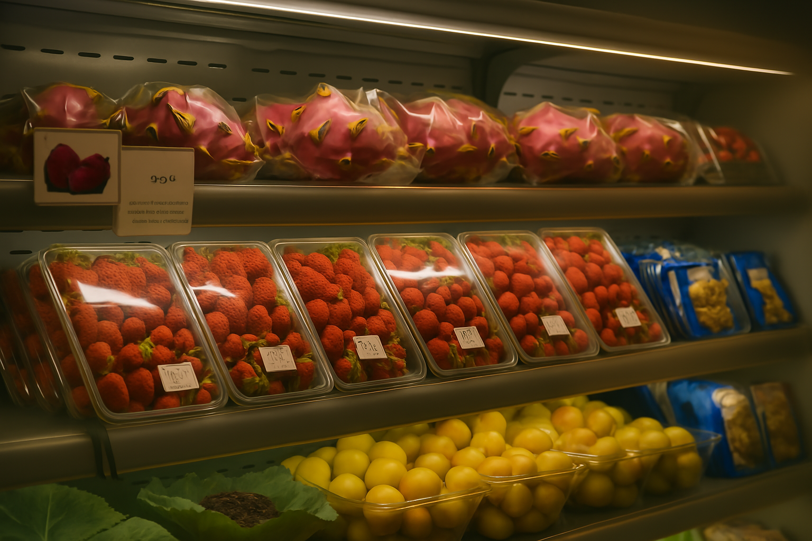
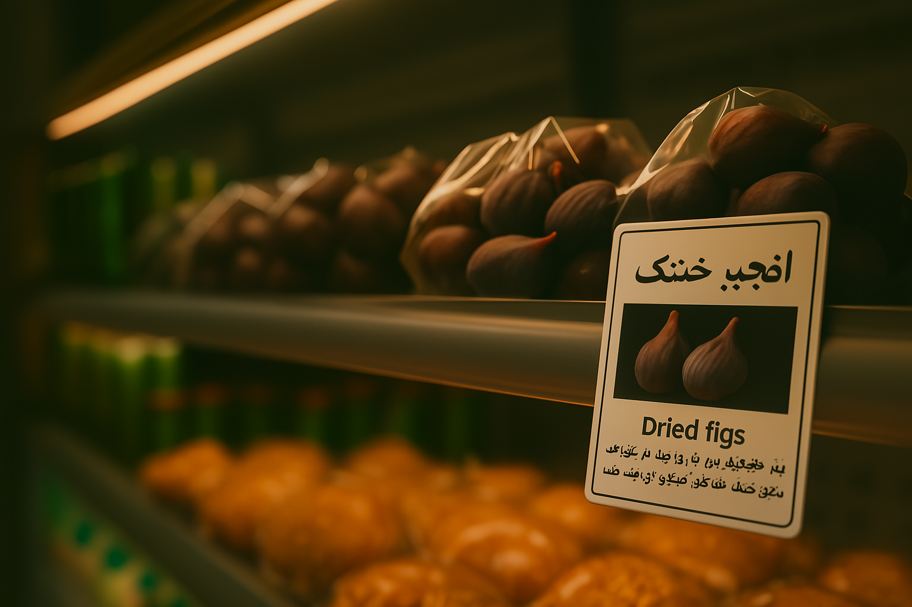
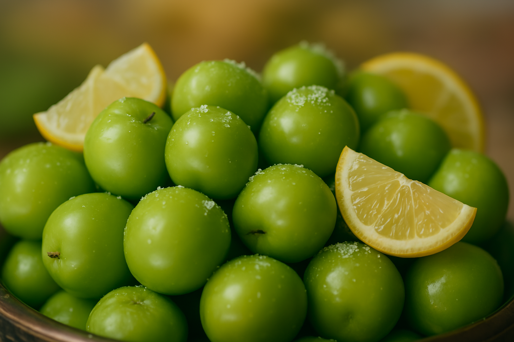
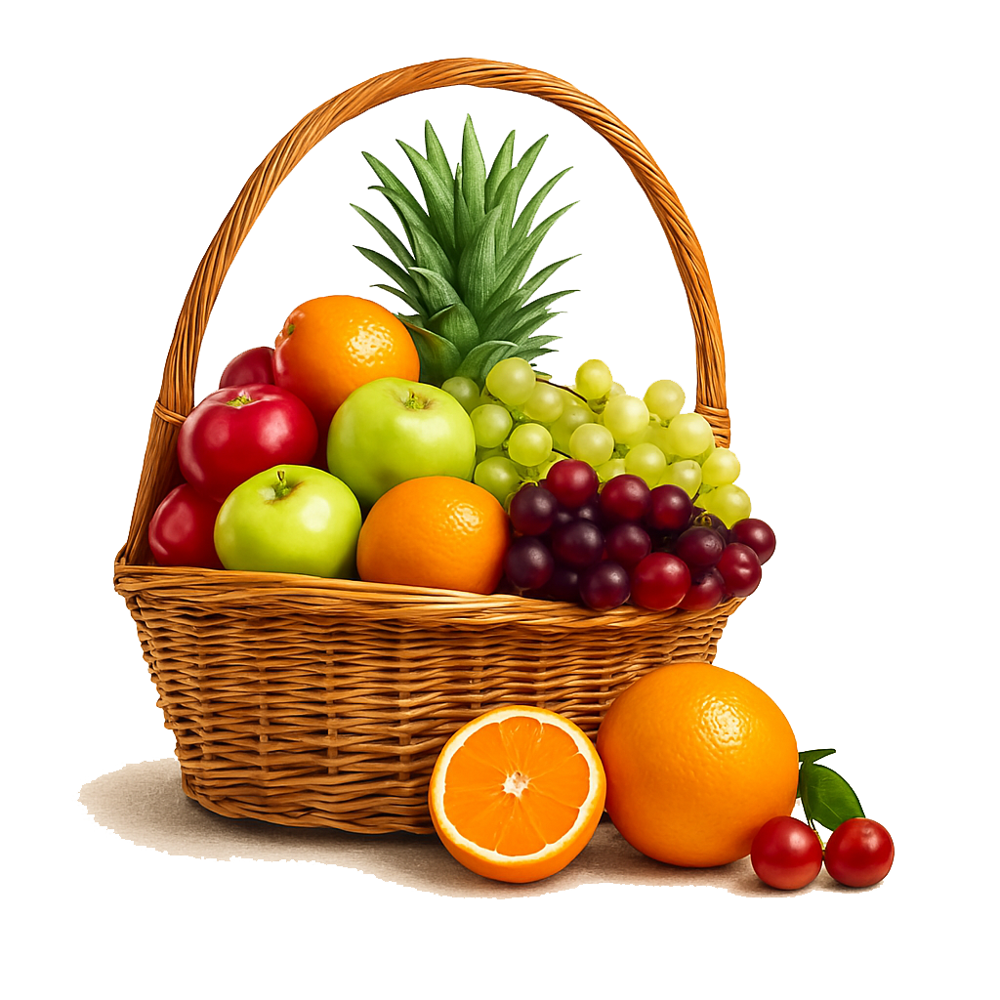

خواص میوههای تازه برای سلامتی
میوههای تازه یکی از مهمترین منابع تغذیهای برای حفظ سلامتی و تندرستی هستند. این مواد غذایی طبیعی سرشار از ویتامینها، مواد معدنی، فیبر و آنتیاکسیدانهای ضروری برای بدن میباشند.
ویتامینهای موجود در میوهها
میوههای مختلف حاوی ویتامینهای متنوعی هستند که هر کدام نقش مهمی در سلامت بدن ایفا میکنند:
- ویتامین C: موجود در مرکبات، کیوی و توتفرنگی که سیستم ایمنی را تقویت میکند
- ویتامین A: موجود در هویج، انبه و زردآلو که برای سلامت چشم و پوست ضروری است
- ویتامین K: موجود در کیوی و توتها که برای انعقاد خون مهم است
- ویتامینهای گروه B: موجود در موز و آووکادو که برای متابولیسم انرژی ضروری هستند
آنتیاکسیدانهای طبیعی
آنتیاکسیدانها ترکیباتی هستند که از سلولهای بدن در برابر رادیکالهای آزاد محافظت میکنند. میوههای رنگی مانند توتها، انگور و انار سرشار از آنتیاکسیدان هستند.
فیبر غذایی
فیبر موجود در میوهها به بهبود عملکرد دستگاه گوارش، کنترل قند خون و کاهش کلسترول کمک میکند. سیب، گلابی و توتها از منابع غنی فیبر هستند.
نکات مهم در مصرف میوهها
- میوهها را در فصل مناسب مصرف کنید تا از بیشترین فواید بهرهمند شوید
- تنوع در مصرف میوهها را رعایت کنید
- میوهها را قبل از مصرف به خوبی بشویید
- از مصرف میوههای فاسد یا کپکزده خودداری کنید

همه چیز درباره میوه خشک: خواص، روش تهیه و مصرف
میوه خشک یکی از سالمترین و مغذیترین میانوعدهها است که میتواند جایگزین مناسبی برای تنقلات ناسالم باشد. این محصول با حذف آب از میوههای تازه تهیه میشود و خواص تغذیهای آنها را حفظ میکند.
خواص میوه خشک
- منبع غنی انرژی: میوه خشک کالری بالایی دارد و برای ورزشکاران مناسب است
- فیبر بالا: به بهبود عملکرد دستگاه گوارش کمک میکند
- آنتیاکسیدان: از پیری زودرس و بیماریهای قلبی پیشگیری میکند
- مواد معدنی: سرشار از آهن، کلسیم و پتاسیم است
انواع میوه خشک
- کشمش: منبع غنی آهن و انرژی
- آلو خشک: سرشار از فیبر و ویتامین K
- زردآلو خشک: غنی از بتاکاروتن و آهن
- انجیر خشک: منبع کلسیم و فیبر
- خرما: سرشار از پتاسیم و انرژی طبیعی
روش تهیه میوه خشک در خانه
- میوهها را به قطعات کوچک و یکسان تقسیم کنید
- آنها را در آفتاب یا دستگاه خشککن قرار دهید
- دما را بین ۵۰ تا ۶۰ درجه سانتیگراد تنظیم کنید
- تا زمانی که میوهها کاملاً خشک شوند صبر کنید

طرز تهیه اسموتیهای سالم و خوشمزه
اسموتیها یکی از بهترین راهها برای مصرف میوهها و سبزیجات هستند. این نوشیدنیهای مغذی سرشار از ویتامینها، مواد معدنی و آنتیاکسیدانها میباشند.
دستور پخت اسموتی توتفرنگی و موز
مواد مورد نیاز:
- ۱ فنجان توتفرنگی تازه
- ۱ عدد موز رسیده
- ۱ فنجان شیر بادام یا شیر معمولی
- ۱ قاشق غذاخوری عسل (اختیاری)
- چند تکه یخ
طرز تهیه:
- تمام مواد را در مخلوطکن بریزید
- تا زمانی که مخلوط یکدست شود هم بزنید
- در لیوان ریخته و فوراً میل کنید
دستور پخت اسموتی سبز
مواد مورد نیاز:
- ۲ فنجان اسفناج تازه
- ۱ عدد سیب سبز
- ۱ عدد موز
- ۱ فنجان آب نارگیل
- ۱ قاشق چایخوری زنجبیل تازه
نکات مهم در تهیه اسموتی
- از میوههای تازه و رسیده استفاده کنید
- برای طعم بهتر از میوههای منجمد استفاده کنید
- اسموتی را بلافاصله پس از تهیه مصرف کنید
- برای تنوع از ادویههایی مانند دارچین یا زنجبیل استفاده کنید

بهترین میوههای فصل زمستان و خواص آنها
زمستان فصل مناسبی برای مصرف میوههای پرخاصیت است که سیستم ایمنی بدن را تقویت کرده و از ابتلا به بیماریهای فصلی پیشگیری میکنند.
پرتقال و نارنگی
مرکبات زمستانی سرشار از ویتامین C هستند که سیستم ایمنی را تقویت میکند:
- تقویت سیستم ایمنی بدن
- پیشگیری از سرماخوردگی
- کمک به جذب آهن
- سلامت پوست و مو
سیب
سیب یکی از محبوبترین میوههای زمستانی است:
- منبع غنی فیبر
- کمک به سلامت قلب
- کنترل قند خون
- پیشگیری از سرطان
انار
انار میوهای سرشار از آنتیاکسیدان است:
- تقویت سیستم ایمنی
- کاهش فشار خون
- پیشگیری از بیماریهای قلبی
- خاصیت ضد التهابی
کیوی
کیوی منبع غنی ویتامین C و فیبر است:
- تقویت سیستم ایمنی
- بهبود هضم غذا
- سلامت چشم
- کمک به خواب بهتر

راهنمای کامل انتخاب میوههای تازه و با کیفیت
انتخاب میوههای تازه و با کیفیت مهارتی است که میتواند تأثیر زیادی بر سلامت و طعم غذاهای شما داشته باشد. در این راهنما نکات مهم انتخاب میوههای مختلف را بررسی میکنیم.
نکات کلی انتخاب میوه
- رنگ: میوههای رسیده معمولاً رنگ طبیعی و یکدستی دارند
- بو: میوههای تازه بوی طبیعی و خوشایندی دارند
- سختی: میوه نباید خیلی سخت یا خیلی نرم باشد
- وزن: میوههای سنگینتر معمولاً آبدارتر هستند
انتخاب سیب
- سطح صاف و بدون لکه داشته باشد
- رنگ یکدست و طبیعی باشد
- سخت و محکم باشد
- ساقه آن سبز و تازه باشد
انتخاب پرتقال
- پوست نازک و صاف داشته باشد
- وزن نسبت به اندازه آن مناسب باشد
- رنگ نارنجی روشن داشته باشد
- بدون لکه یا کپک باشد
انتخاب موز
- رنگ زرد یکدست داشته باشد
- لکههای قهوهای کم باشد
- ساقه آن سبز باشد
- بدون ترک یا شکستگی باشد
نکات نگهداری
- میوهها را در جای خنک و خشک نگهداری کنید
- از قرار دادن میوههای مختلف کنار هم خودداری کنید
- میوههای آسیب دیده را جدا کنید
- قبل از مصرف به خوبی بشویید

خواص آبمیوههای طبیعی و بهترین زمان مصرف آنها
آبمیوههای طبیعی یکی از بهترین راهها برای دریافت ویتامینها و مواد معدنی مورد نیاز بدن هستند. در این مقاله با خواص مختلف آبمیوهها آشنا میشویم.
آب پرتقال
آب پرتقال سرشار از ویتامین C است:
- تقویت سیستم ایمنی
- جذب بهتر آهن
- سلامت پوست
- پیشگیری از سرماخوردگی
آب سیب
آب سیب منبع غنی آنتیاکسیدان است:
- کاهش کلسترول
- سلامت قلب
- پیشگیری از سرطان
- بهبود هضم
آب هویج
آب هویج سرشار از بتاکاروتن است:
- سلامت چشم
- تقویت سیستم ایمنی
- سلامت پوست
- پیشگیری از سرطان
بهترین زمان مصرف آبمیوه
- صبح: آب پرتقال یا آب سیب برای انرژی
- قبل از ورزش: آب هویج یا آب چغندر
- بعد از ورزش: آب نارگیل برای هیدراتاسیون
- شب: آب آلبالو برای خواب بهتر
نکات مهم در تهیه آبمیوه
- از میوههای تازه و رسیده استفاده کنید
- آبمیوه را بلافاصله مصرف کنید
- از شکر اضافی استفاده نکنید
- برای طعم بهتر از ترکیب میوهها استفاده کنید

رژیم غذایی سالم با میوهها: راهنمای کامل تغذیه
رژیم غذایی سالم شامل مصرف منظم میوهها میتواند تأثیر زیادی بر سلامت کلی بدن داشته باشد. در این مقاله راهنمای کامل تغذیه سالم با میوهها را بررسی میکنیم.
مقدار توصیه شده مصرف میوه
سازمان بهداشت جهانی توصیه میکند:
- حداقل ۵ واحد میوه و سبزیجات در روز
- هر واحد معادل یک فنجان میوه خرد شده
- تنوع در مصرف میوههای مختلف
- ترجیح میوههای فصلی
برنامه غذایی هفتگی
شنبه تا سهشنبه:
- صبحانه: اسموتی موز و توتفرنگی
- میانوعده: سیب یا پرتقال
- ناهار: سالاد میوه
- عصرانه: میوه خشک
- شام: آبمیوه طبیعی
میوههای مناسب برای کاهش وزن
- گریپفروت: کالری کم و فیبر بالا
- سیب: احساس سیری طولانی
- توتها: آنتیاکسیدان بالا
- هندوانه: آب فراوان و کالری کم
میوههای مناسب برای ورزشکاران
- موز: منبع پتاسیم و انرژی
- پرتقال: ویتامین C و هیدراتاسیون
- انگور: آنتیاکسیدان و انرژی
- آووکادو: چربی سالم و پروتئین
نکات مهم در رژیم غذایی
- مصرف میوهها را در طول روز تقسیم کنید
- از میوههای فصلی استفاده کنید
- ترکیب میوهها با پروتئین
- مصرف آب کافی همراه با میوهها
- اجتناب از مصرف بیش از حد میوههای شیرین
کشت میوه در خانه: راهنمای کامل باغبانی خانگی
کشت میوه در خانه نه تنها یک فعالیت سرگرمکننده است، بلکه میتواند منبع تازهای از میوههای ارگانیک برای خانواده شما باشد. در این مقاله راهنمای کامل کشت میوه در فضای محدود خانه را بررسی میکنیم.
انتخاب گیاهان مناسب برای خانه
برای کشت موفق در خانه، گیاهانی را انتخاب کنید که:
- نیاز به فضای کم دارند
- در گلدان رشد میکنند
- مقاوم به شرایط داخل خانه هستند
- زود به بار مینشینند
بهترین میوهها برای کشت در خانه
توتفرنگی:
- نیاز به نور مستقیم خورشید
- خاک اسیدی و زهکشی خوب
- آبیاری منظم و متوسط
- کشت در گلدانهای آویز
لیموترش:
- درختچهای مناسب برای بالکن
- نیاز به نور فراوان
- خاک غنی و زهکشی مناسب
- هرس منظم برای شکلدهی
فلفل دلمهای:
- رشد سریع و آسان
- نیاز به نور متوسط
- خاک سبک و غنی
- آبیاری منظم
ابزار و لوازم مورد نیاز
- گلدان: با سوراخ زهکشی مناسب
- خاک: مخلوط خاک باغچه و کمپوست
- کود: کود آلی یا شیمیایی متعادل
- ابزار: بیلچه، قیچی باغبانی، آبپاش
- نور: لامپ رشد گیاه (در صورت نیاز)
مراحل کشت
مرحله ۱: آمادهسازی
- انتخاب گلدان مناسب
- تهیه خاک با کیفیت
- انتخاب بذر یا نهال سالم
- آمادهسازی محل کشت
مرحله ۲: کشت
- پر کردن گلدان با خاک
- کاشت بذر یا نهال
- آبیاری اولیه
- قرار دادن در محل مناسب
مرحله ۳: نگهداری
- آبیاری منظم
- کوددهی ماهانه
- هرس و هرس
- کنترل آفات
نکات مهم در باغبانی خانگی
- دمای مناسب برای رشد گیاهان (۱۸-۲۵ درجه سانتیگراد)
- رطوبت کافی هوا
- تهویه مناسب
- دور نگه داشتن از وسایل گرمایشی
- استفاده از سینی زیر گلدان برای جمعآوری آب اضافی
مشکلات رایج و راهحلها
- زرد شدن برگها: کمبود نور یا آبیاری نامناسب
- پوسیدگی ریشه: آبیاری بیش از حد
- عدم گلدهی: کمبود کود یا نور
- آفات: استفاده از روشهای طبیعی کنترل
ترکیب میوه و عسل: خواص درمانی و دستورات مفید
ترکیب میوه و عسل یکی از قدیمیترین و موثرترین روشهای درمانی در طب سنتی است. این ترکیب طبیعی نه تنها خوشمزه است، بلکه خواص درمانی فراوانی دارد. در این مقاله به بررسی خواص و دستورات مختلف ترکیب میوه و عسل میپردازیم.
خواص کلی ترکیب میوه و عسل
- تقویت سیستم ایمنی بدن
- افزایش انرژی و نشاط
- بهبود هضم و جذب مواد غذایی
- پاکسازی بدن از سموم
- کاهش التهاب و درد
- بهبود کیفیت خواب
ترکیبات مفید میوه و عسل
عسل و لیمو:
- خواص: تقویت سیستم ایمنی، پاکسازی کبد
- طرز تهیه: آب یک لیمو + ۱ قاشق عسل + آب گرم
- زمان مصرف: صبح ناشتا
- فواید: درمان سرماخوردگی، کاهش وزن
عسل و سیب:
- خواص: تنظیم قند خون، سلامت قلب
- طرز تهیه: سیب رنده شده + عسل + دارچین
- زمان مصرف: صبحانه یا میانوعده
- فواید: کاهش کلسترول، بهبود هضم
عسل و پرتقال:
- خواص: ویتامین C فراوان، آنتیاکسیدان
- طرز تهیه: آب پرتقال + عسل + زنجبیل
- زمان مصرف: صبح یا قبل از ورزش
- فواید: تقویت سیستم ایمنی، انرژیبخش
دستورات درمانی
معجون سرماخوردگی:
ترکیبی از عسل، لیمو، زنجبیل و سیر:
- ۲ قاشق عسل طبیعی
- آب یک لیمو
- ۱ قاشق زنجبیل رنده شده
- ۱ حبه سیر خرد شده
- آب گرم
معجون انرژی:
ترکیبی از عسل، موز و مغزها:
- ۱ موز رسیده
- ۲ قاشق عسل
- مغز بادام و گردو
- شیر یا آب
نکات مهم در مصرف
- استفاده از عسل طبیعی و خام
- عدم حرارت دادن عسل بالای ۴۰ درجه
- مصرف در حد اعتدال
- توجه به حساسیتهای غذایی
- مشورت با پزشک در صورت بیماری خاص
دستورات دسر و شیرینی
سالاد میوه با عسل:
- ترکیب میوههای مختلف
- عسل به عنوان شیرینکننده
- اضافه کردن مغزها
- سرو سرد
اسموتی عسل و میوه:
- ترکیب میوههای فصلی
- عسل برای شیرینی طبیعی
- شیر یا ماست
- یخ برای خنکی
هشدارها و محدودیتها
- عدم مصرف برای کودکان زیر یک سال
- محدودیت مصرف برای دیابتیها
- توجه به کیفیت عسل
- مصرف در حد اعتدال
فریز کردن میوه: راهنمای کامل نگهداری طولانی مدت
فریز کردن میوه یکی از بهترین روشها برای نگهداری طولانی مدت و حفظ خواص غذایی میوهها است. این روش به شما امکان میدهد تا در تمام فصول سال از میوههای تازه استفاده کنید. در این مقاله راهنمای کامل فریز کردن انواع میوهها را بررسی میکنیم.
اصول کلی فریز کردن میوه
- انتخاب میوههای تازه و رسیده
- شستشوی کامل و ضدعفونی
- خشک کردن کامل میوهها
- بستهبندی مناسب
- تنظیم دمای فریزر (۱۸- درجه سانتیگراد)
مراحل آمادهسازی
مرحله ۱: انتخاب و شستشو
- انتخاب میوههای سالم و بدون لک
- شستشو با آب سرد
- استفاده از محلول ضدعفونی (اختیاری)
- خشک کردن با حوله تمیز
مرحله ۲: آمادهسازی
- برش میوهها به اندازه مناسب
- حذف هسته و پوست (در صورت نیاز)
- آمادهسازی برای بستهبندی
روشهای مختلف فریز کردن
فریز کردن ساده:
- قرار دادن میوهها در کیسه فریزر
- خارج کردن هوای اضافی
- بستن محکم کیسه
- قرار دادن در فریزر
فریز کردن با شکر:
- مخلوط کردن میوه با شکر
- انتظار برای حل شدن شکر
- بستهبندی و فریز کردن
- مناسب برای میوههای ترش
فریز کردن با شربت:
- تهیه شربت شکر (۳۰-۵۰٪)
- قرار دادن میوه در شربت
- بستهبندی و فریز کردن
- حفظ شکل و طعم بهتر
فریز کردن انواع میوهها
توتها (توتفرنگی، تمشک، شاهتوت):
- شستشوی ملایم
- خشک کردن کامل
- فریز کردن در یک لایه
- انتقال به کیسه پس از یخ زدن
سیب و گلابی:
- برش به قطعات کوچک
- آبپز کردن کوتاه
- سرد کردن سریع
- فریز کردن
هلو و زردآلو:
- حذف هسته
- برش به نیمه یا قطعات
- استفاده از شربت شکر
- فریز کردن
مرکبات:
- پوست کندن کامل
- حذف پوسته سفید
- فریز کردن در شربت
- مناسب برای آبمیوه
نکات مهم در فریز کردن
- استفاده از ظروف مناسب فریزر
- نوشتن تاریخ فریز کردن
- عدم پر کردن بیش از حد ظروف
- تنظیم دمای فریزر
- جلوگیری از باز و بسته کردن مکرر
مدت زمان نگهداری
- توتها: ۸-۱۲ ماه
- سیب و گلابی: ۱۰-۱۲ ماه
- هلو و زردآلو: ۸-۱۰ ماه
- مرکبات: ۶-۸ ماه
- موز: ۶-۸ ماه
نحوه استفاده از میوههای فریز شده
- یخزدایی در یخچال
- استفاده مستقیم در اسموتی
- پختن در دسرها
- تهیه مربا و کمپوت
- استفاده در سالاد میوه
مشکلات رایج و راهحلها
- سوختگی فریزر: بستهبندی محکم
- تغییر رنگ: استفاده از ویتامین C
- کریستالهای یخ: خشک کردن کامل
- طعم نامطلوب: استفاده از شربت
دسرهای میوهای: دستورات خوشمزه و سالم
دسرهای میوهای نه تنها خوشمزه هستند، بلکه میتوانند جایگزین سالمی برای دسرهای پرکالری باشند. در این مقاله دستورات متنوع و خوشمزه دسرهای میوهای را بررسی میکنیم که هم سالم هستند و هم طعم فوقالعادهای دارند.
اصول تهیه دسرهای سالم
- استفاده از میوههای تازه و فصلی
- کاهش مصرف شکر
- استفاده از شیرینکنندههای طبیعی
- ترکیب با مغزها و دانهها
- استفاده از لبنیات کم چرب
دستورات دسرهای ساده
سالاد میوه با ماست:
ترکیبی ساده و خوشمزه:
- ۲ فنجان میوههای مختلف
- ۱ فنجان ماست یونانی
- ۲ قاشق عسل
- مغز بادام خرد شده
- نعناع تازه برای تزئین
پارفه میوهای:
لایهای از میوه و ماست:
- ماست یونانی
- میوههای خرد شده
- گرانولا خانگی
- عسل یا شربت افرا
- مغزها برای تزئین
دستورات دسرهای پیشرفته
کیک میوهای بدون پخت:
کیکی سالم و خوشمزه:
- ۲ فنجان مغز بادام
- ۱ فنجان خرما
- ۲ قاشق کره بادام
- میوههای تازه برای تزئین
- شکلات تلخ ذوب شده
آیسکرم میوهای:
آیسکرمی سالم و طبیعی:
- موزهای فریز شده
- توتفرنگی تازه
- شیر بادام
- عسل برای شیرینی
- وانیل
دستورات ویژه
چیزکیک میوهای:
چیزکیکی سبک و خوشمزه:
- بیسکویت سبوسدار
- پنیر خامهای کم چرب
- ماست یونانی
- ژلاتین
- میوههای تازه
ترایفل میوهای:
دسری لایهای و زیبا:
- کیک اسفنجی
- کرم بادام
- میوههای مختلف
- ژله میوهای
- خامه زده شده
دستورات فصلی
دسرهای تابستانی:
- سالاد میوه با نعناع
- آیسکرم میوهای
- اسموتیهای خنک
- پودینگ میوهای
دسرهای زمستانی:
- کمپوت میوهای گرم
- پای میوهای
- کیک میوهای
- شیرینی میوهای
نکات مهم در تهیه دسر
- استفاده از میوههای رسیده و تازه
- تنظیم شیرینی طبق ذائقه
- تزئین زیبا و جذاب
- نگهداری در یخچال
- مصرف در همان روز تهیه
جایگزینهای سالم
- شکر: عسل، شربت افرا، استویا
- خامه: ماست یونانی، پنیر کوتاژ
- آرد سفید: آرد کامل، آرد بادام
- کره: روغن نارگیل، کره بادام
تزئین و سرو
- استفاده از میوههای رنگی
- مغزها و دانهها
- شکلات تلخ رنده شده
- نعناع و ریحان تازه
- پودر دارچین یا کاکائو